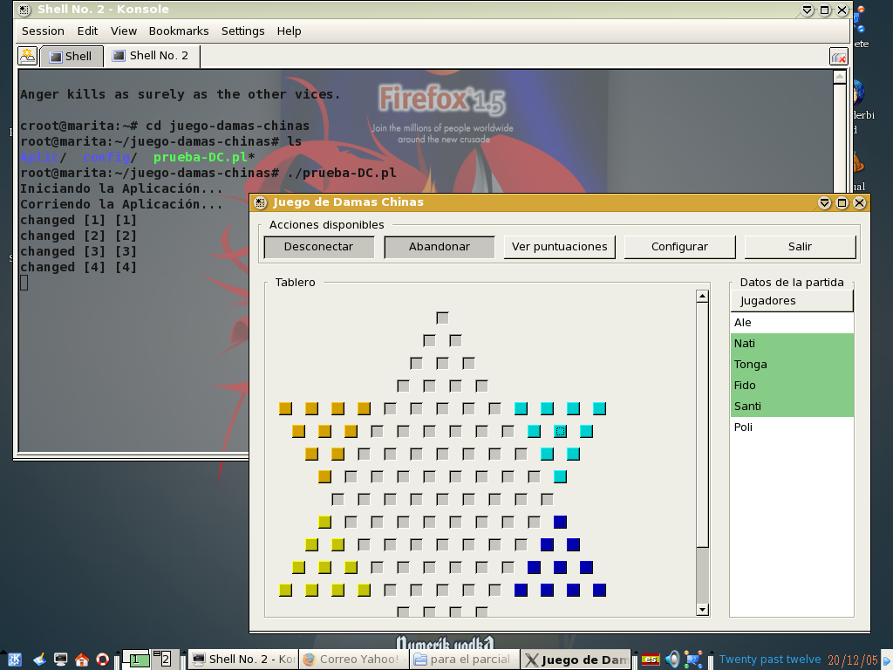

Intro a Gtk2-perl y otros accesorios
por Gaston Dall' Oglio (tongadall4_at_yahoo.com.ar)
Última modificación : 23 de Diciembre de 2005
Juego de Damas Chinas
Este es un juego muy antiguo, y principalmente lo que se quiere demostrar
es la implementación de una interfaz gráfica implementando un juego
como el de las damas chinas utilizando, principalmente, Gtk2
Manejo de clases (Perl6::Classes)
Hasta perl5 (y donde yo se) se puede usar la notación de orientación a objetos
al instanciar objetos y pasar mensajes a éstos, pero la declaración de una
clase (la herencia, la declaración de métodos y atributos) se hace usando
paquetes, que no lucen como verdaderas clases. Una clase se define como un
paquete que contiene las subrutinas que luego son utilizadas como métodos, y
los atributos se almacenan en un hash que es devuelto cuando se invoca el
constructor de ella. Este hash, es practicamente el objeto que guarda una
refererencia de a que paquete pertenece, significando la clase.
El Perl6 la notación de clases es natural en el lenguaje, pero para poder tener
algo de ésto en Perl5, se puede usar el módulo Perl6::Classes, que simula parte
del lenguaje de Perl6.
Con éste módulo se puede declarar las clases similar a otros lenguajes: C++,
object pascal, java, etc. Esto debe facilitar la legibilidad y mantenimiento de
los códigos fuentes, entre otros.
No hay que engañarse, la orientación a objetos no es para aplicarla en todo
momento y lugar, muchas problemas se pueden resolver sin ella de manera
correcta y/o usarla es inapropiado. Pero cuando se trata de interfaz gráfica de
usuario, es muy útil.
Interfaz gráfica (Gtk/Glib)
¿Qué es y qué no es GTK?
GTK quere decir GIMP Toolkit, y GIMP, GNU Image Manipulation Program. El GIMP
es un programa de manipulación gráfica muy avanzado. Es decir, la GTK fué creda
para desarrollar el GIMP, por lo que esta librería tiene gran capacidad
gráfica. Y en segundo lugar, es solo eso, una librería gráfica. Esto la
diferencia bastante de Qt, la cual es mas que una librería gráfica, es un
framework para el desarrollo de aplicaciones multiplataforma (cross-platform).
De la página de Qt:
"Qt however goes far beyond being a GUI toolkit by providing functionality for
file handling, networking, process handling, threading, database access, event
loop processing, XML processing, OpenGL integration, and more."
Mientras que GTK no es un framework para desarrollo de aplicaciones, es solo
esto :
"GTK (GIMP Toolkit) is a library for creating graphical user interfaces."
http://www.gtk.org/tutorial/c24.html
¿Y porque eso debería ser mejor?
Bueno, si uno ya dispone de librerías para hacer todo lo que no tiene que ver
con la interfaz gráfica de usuario, para que quiere un ¿¿¿framework???
Y Perl dispone de CPAN.
Con esto no quero decir que GTK es superior y mas utilizable que Qt, sino que
es solo esa fina y rica capa de interacción con el usuario, que se comunica con
el Perl.
Hace un tiempo yo utilizaba Delphi 6 y 7, los cuales para ser compatibles con
Kylix (clon Delphi para Linux) se valían de Qt en sus entrañas. Entonces si uno
mira la CLX (librería de clases común a éstos tres), se ve que muchas tareas se
derivaban a librerías de la Qt. Es decir, las clases de la CLX invocan a
funciones de Qt en vez de realizar las tareas directamente, y esto porque Qt es
un framework, lo hace todo. Ahora utilizo Lazarus, que es un IDE clon de Delphi
para el compilador Free Pascal. Free Pascal no tiene interfaz de usuario
gráfica, por lo que Lazarus se vale para la parte gráfica de... si señor, GTK.
Con Perl sucede esto mismo, GTK hace lo que falta.
Para entrar en detalles, la GTK consta de dos partes mas, la GDK (GIMP Drawing
Kit) y la GLib. La GTK esta construída sobre la GDK, que es basicamente un
envoltorio (wrapper) de las funciones de bajo nivel para el acceso a las
funciones de manejo de ventanas. GLib básicamente, mejorta la portabilidad y
desempeño de GTK.
Configuración (pkg-config y módulos relacionados)
Decir qué y como instalar y ser infalible es difícil porque depende de muchas
cosas, plataforma, distribuciones, paquetes ya instalados y sus versiones,
etc., pero lo que no hay que perder de vista es lo estrictamente necesario:
primero tener GTK+ 2.x instalada y despues los módulos necesarios para
enlazarse desde Perl.
Voy a suponer que la GTK+ 2.x esta instalada, porque eso es mas largo de
explicar. Para saber si esta instalada y que versión, se puede usar pkg-config,
que sirve para devolver información sobre la librerías instaladas:
root@marita:~# pkg-config --list-all | grep gtk+
gtk+-2.0 GTK+ - GIMP Tool Kit (x11 target)
...
Entre varias librerías, apareció gtk+-2.0. Ahora que se el nombre de la
librería, pido la versión:
root@marita:~# pkg-config --modversion gtk+-2.0
2.8.8
Y también la GLib:
root@marita:~# pkg-config --list-all | grep GLib
glib-2.0 GLib - C Utility Library
...
root@marita:~# pkg-config --modversion glib-2.0
2.8.4
Listo! Si se tiene instalada la GTK+ 1.x no es necesario desinstalarla, pueden
estar las dos juntas sin problemas.
pkg-config
Si no se tiene instalada ésta herramienta, o no esta seteada la variable
PKG_CONFIG_PATH correctamente, entonces puede haber problemas. Para ver si se
tiene instalado pkg-config se puede usar whereis que busca binarios:
root@marita:~# whereis pkg-config
pkg-config: /usr/bin/pkg-config ...
La variable PKG_CONFIG_PATH dice donde se guarda información sobre los paquetes
instalados, y esta información son archivos con extención .pc. De no estar
seteada correctamente, se puede usar locate para encontar la ruta donde halla
algunos:
root@marita:~# locate *.pc
...
/usr/lib/pkgconfig/mozilla-plugin.pc
/usr/lib/pkgconfig/gtkhex.pc
/usr/lib/pkgconfig/xcomposite.pc
/usr/lib/pkgconfig/gnet-2.0.pc
/usr/lib/pkgconfig/mozilla-nss.pc
/usr/lib/pkgconfig/esound.pc
...
Así que la ruta es /usr/lib/pkgconfig, y /usr/local/lib/pkgconfig por las
dudas. Se establece la variable PKG_CONFIG_PATH:
root@marita:~# PKG_CONFIG_PATH=:/usr/lib/pkgconfig:/usr/local/lib/pkgconfig
root@marita:~# export PKG_CONFIG_PATH
Si directamente no estuviera instalado pkg-config, bajar el archivo de los
fuentes (digamos pkg-config-0.20.tar.gz) a algun directorio y poner:
root@marita:~/gtk+/v2.8/dependencies# tar xvzf pkg-config-0.20.tar.gz
root@marita:~/gtk+/v2.8/dependencies# cd pkg-config-0.20
root@marita:~/gtk+/v2.8/dependencies/pkg-config-0.20# ./configure
root@marita:~/gtk+/v2.8/dependencies/pkg-config-0.20# make
root@marita:~/gtk+/v2.8/dependencies/pkg-config-0.20# make check
root@marita:~/gtk+/v2.8/dependencies/pkg-config-0.20# make install
root@marita:~/gtk+/v2.8/dependencies/pkg-config-0.20# make clean
Esto por defecto lo instala en /usr/local/bin, /usr/local/man, etc. Si se
quiere en otro lugar, digamos /usr/bin, /usr/man, reemplzar el ./configure
anterior por ./configure --prefix=/usr/.
Perfecto, ahora directo a los módulos Perl.
ExtUtils-Depends y ExtUtils-PkgConfig
El primero intenta facilitar la contrucción de extensiones Perl en base a otras
extensiones Perl. El segundo es una interfaz para pkg-config (otra vez nuestro
amigo).
Los archivos fuentes son ExtUtils-Depends-0.205.tar.gz, y
ExtUtils-PkgConfig-1.07.tar.gz. Voy a explicar con uno, con el otro es igual.
root@marita:~/gtk2-perl# tar xvzf ExtUtils-Depends-0.205.tar.gz
ExtUtils-Depends-0.205/
...
root@marita:~/gtk2-perl# cd ExtUtils-Depends-0.205
root@marita:~/gtk2-perl/ExtUtils-Depends-0.205# perl Makefile.PL
Writing Makefile for ExtUtils::Depends
root@marita:~/gtk2-perl/ExtUtils-Depends-0.205# make
Manifying blib/man3/ExtUtils::Depends.3
root@marita:~/gtk2-perl/ExtUtils-Depends-0.205# make install
Writing
/usr/lib/perl5/site_perl/5.8.6/i486-linux/auto/ExtUtils/Depends/.packlist
Appending installation info to /usr/lib/perl5/5.8.6/i486-linux/perllocal.pod
root@marita:~/gtk2-perl/ExtUtils-Depends-0.205# make clean
rm -rf ./blib Makefile.aperl blib/arch/auto/ExtUtils/Depends/extral ...
Listo! ahora igual con ExtUtils-PkgConfig-1.07.tar.gz y concluída esta parte.
Glib2 y Gtk2
El primero es el módulo que enlaza a GLib2, y el segundo a GTK2.
Los archivos fuentes son Glib-1.102.tar.gz, y Gtk2-1.102.tar.gz. Nuevamente,
voy a explicar con uno, con el otro es igual.
root@marita:~/gtk2-perl# tar xvzf Glib-1.102.tar.gz
Glib-1.102/
...
root@marita:~/gtk2-perl# cd Glib-1.102
root@marita:~/gtk2-perl/Glib-1.102# perl Makefile.PL
Including ApiDoc pod...
Deleting Glib from doc.pl's $data
Writing build/IFiles.pm
Checking if your kit is complete...
Looks good
Unrecognized argument in LIBS ignored: '-pthread'
Writing Makefile for Glib
Lo siguiente va a estar un rato largo creando los binarios y demás:
root@marita:~/gtk2-perl/Glib-1.102# make
cp build/IFiles.pm blib/arch/Glib/Install/Files.pm
...
root@marita:~/gtk2-perl/Glib-1.102# make test
PERL_DL_NONLAZY=1 /usr/bin/perl5.8.6 "-MExtUtil ...
root@marita:~/gtk2-perl/Glib-1.102# make install
Files found in blib/arch: installing files in blib/lib into arch ...
root@marita:~/gtk2-perl/Glib-1.102# make clean
rm -rf GValue.c GIOChannel.c Glib.c GSign ...
Listo! ahora con Gtk2-1.102.tar.gz.
El juego
El archivo que se llama "juego-damas-chinas.tar.gz" es el que hay que
descomprimir, y dentro del directorio "juego-damas-chinas" teclear
"./prueba-DC.pl" y debería aparecer la ventana del juego (nada de otro mundo
repito ;-) ).
El sitio gtk2-perl
De mas esta decir que para ésto ya hay un
sitio, y ahí van a ver mas
paquetes al final de la página, pero en principio no se necesitan. También hay
algo de documentación, como un
tutorial
básico.
Conclusión
La instalación de la GTK+-2.x no es complicada, pero hay que instalar muchas
dependencias o al menos actualizarlas. Pero ánimo!!! pkg-config es tu amigo, y
basicamente es hacer ./configure, make, make check, make install, make clean
;-) Y repito, no desintalen la GTK+-1,x porque muchas aplicaciones usan solo
esa, no la GTK+-2.x.
Por último, si alguien llega hasta aquí, y encuentra algunos errores o algo en
lo que yo este equivocado, le agradecería me corrija.

|